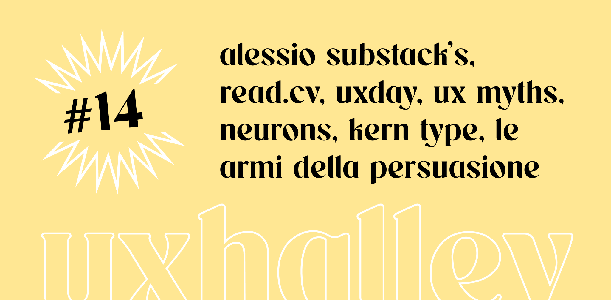

UX Halley, newsletter per designer
uxhalley, edizione #14
10 aprile 2023 — UX Halley: una newsletter bisettimanale che raccoglie news e links utili sulla UX. Le regole sono semplici: max 5 minuti di lettura; se ti interessa, lo approfondisci; se ti piace, lo condividi; a prescindere ci vediamo tra due settimane. Facile facile.
Immagine di copertina dell'edizione di UX Halley, newsetter per designer
Link per designer suggerito nell'edizione di UX Halley, newsletter per designer
read.cv
Read.cv è stato lanciato da poco ed è una via di mezzo tra LinkedIn e Pinterest, specifico per #designer e in generale per chi lavora nel mondo del #design. Per ora sembra interessante, provalo!
Link per designer suggerito nell'edizione di UX Halley, newsletter per designer
falsi miti sulla ux
Ah vabbè ma le persone tanto non scrollano. -cit. Mito? Verità? Metà e metà? Sono i dati a parlare e non le cose per sentito dire o i falsi miti. Questa raccolta li esplora e fornisce informazioni utili sul tema.
Link per designer suggerito nell'edizione di UX Halley, newsletter per designer
prevedere i comportamenti
Ho provato Neurons e devo dire che è davvero interessante. Offrono una serie di strumenti interessanti che si basano principalmente sull'#AI, per gestire le performance e quindi l'efficientamento di visual e di prodotti digitali.
Link per designer suggerito nell'edizione di UX Halley, newsletter per designer
presentare i dati di ricerca
Fare ricerca è necessario, ma raccontare bene i risultati è fondamentale. Se si acquisiscono dati ma non si riescono poi a riassumere in modo semplice, valido e "potabile" rischiano di perdere efficacia. Bell'articolo di Talebook.io!
Link per designer suggerito nell'edizione di UX Halley, newsletter per designer
le armi della persuasione
Un libro intramontabile di Robert Cialdini, un must to read che parla di #marketing ma anche di argomenti che possono essere legati a doppio filo con #userexperience e #psicologia. Non puoi non leggerlo.
Link per designer suggerito nell'edizione di UX Halley, newsletter per designer
uxday
Lo scorso anno con il team di Baasbox siamo stati alla prima edizione dello uxday organizzato da GrUSP. Vibes positive, argomenti interessanti e tante persone del mondo del design. Quest'anno fanno il - doveroso - bis!
Link per designer suggerito nell'edizione di UX Halley, newsletter per designer
che occhio hai?
E per finire, vediamo quanto te la canti e te la suoni quando dici che hai il famoso occhio da designer. Qui non si scappa, per cui apri il gioco e mettiti alla prova, così da dimostrare veramente se quest'occhio da designer lo hai davvero.